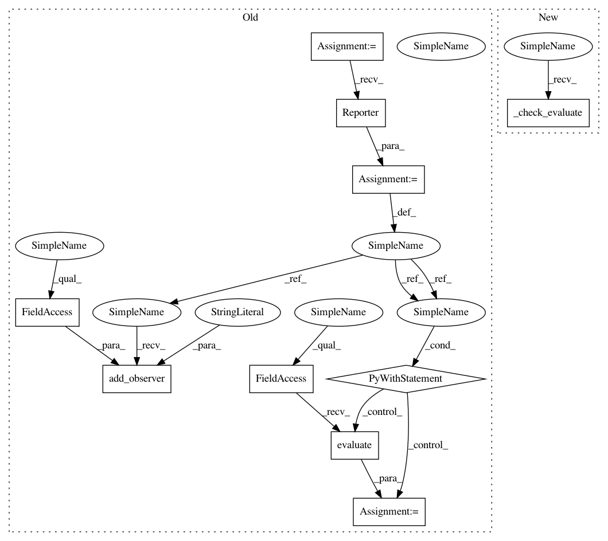

eb35ff439c3796d36c37bf27085b3a11d13ba7f5,tests/extensions_tests/evaluator_tests/test_instance_segmentation_coco_evaluator.py,TestInstanceSegmentationCOCOEvaluator,test_evaluate,#TestInstanceSegmentationCOCOEvaluator#,53
Before Change
self.expected_ap = 1
def test_evaluate(self):
reporter = chainer.Reporter()
reporter.add_observer("target", self.link)
with reporter:
mean = self.evaluator.evaluate()
// No observation is reported to the current reporter. Instead the
// evaluator collect results in order to calculate their mean.
self.assertEqual(len(reporter.observation), 0)
key = "ap/iou=0.50:0.95/area=all/max_dets=100"
np.testing.assert_equal(
After Change
np.testing.assert_equal(mean["target/{}/cls2".format(key)], np.nan)
def test_evaluate(self):
self._check_evaluate()
@attr.mpi
def test_evaluate_with_comm(self):
comm = create_communicator("naive")
In pattern: SUPERPATTERN
Frequency: 5
Non-data size: 10
Instances
Project Name: chainer/chainercv
Commit Name: eb35ff439c3796d36c37bf27085b3a11d13ba7f5
Time: 2019-05-16
Author: yuyuniitani@gmail.com
File Name: tests/extensions_tests/evaluator_tests/test_instance_segmentation_coco_evaluator.py
Class Name: TestInstanceSegmentationCOCOEvaluator
Method Name: test_evaluate
Project Name: chainer/chainercv
Commit Name: 0a6912f079a322414c8b5802660a4dcb0c1f87be
Time: 2019-05-16
Author: yuyuniitani@gmail.com
File Name: tests/extensions_tests/evaluator_tests/test_detection_coco_evaluator.py
Class Name: TestDetectionCOCOEvaluator
Method Name: test_evaluate
Project Name: chainer/chainercv
Commit Name: ef33967e472776ef4c4b20bb6c5e6961881bd5fc
Time: 2019-05-16
Author: yuyuniitani@gmail.com
File Name: tests/extensions_tests/evaluator_tests/test_instance_segmentation_voc_evaluator.py
Class Name: TestInstanceSegmentationVOCEvaluator
Method Name: test_evaluate
Project Name: chainer/chainercv
Commit Name: ef33967e472776ef4c4b20bb6c5e6961881bd5fc
Time: 2019-05-16
Author: yuyuniitani@gmail.com
File Name: tests/extensions_tests/evaluator_tests/test_detection_voc_evaluator.py
Class Name: TestDetectionVOCEvaluator
Method Name: test_evaluate
Project Name: chainer/chainercv
Commit Name: ef33967e472776ef4c4b20bb6c5e6961881bd5fc
Time: 2019-05-16
Author: yuyuniitani@gmail.com
File Name: tests/extensions_tests/evaluator_tests/test_semantic_segmentation_evaluator.py
Class Name: TestSemanticSegmentationEvaluator
Method Name: test_evaluate